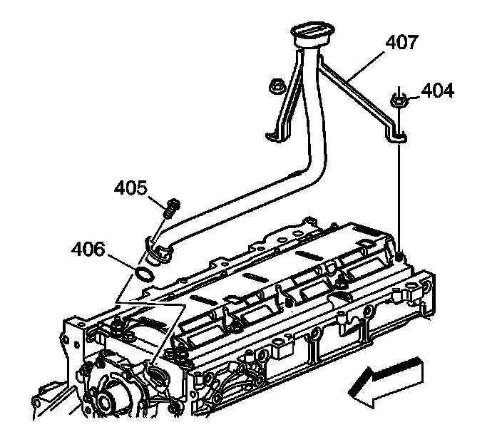

54. Oil Pump Cleaning and Inspection
Oil Pump Cleaning and Inspection

Important:
^ The internal parts of the oil pump assembly are not serviced separately, excluding the spring. If the oil pump components are worn or damaged, replace the oil pump as an assembly.
^ The oil pump pipe and screen are to be serviced as an assembly. Do not attempt to repair the wire mesh portion of the pump and screen assembly.
Clean the parts in solvent.
Caution: Refer to Safety Glasses Caution.
1. Dry the parts with compressed air.
2. Inspect the oil pump housing (413) and the cover (409) for cracks, excessive wear, scoring, or casting imperfections.
3. Inspect the oil pump housing-to-engine block oil gallery surface for scratches or gouging.
4. Inspect the oil pump housing for damaged bolt hole threads.
5. Inspect the relief valve plug (416) and plug bore for damaged threads.
6. Inspect the oil pump internal oil passages for restrictions.
7. Inspect the drive gear (410) and driven gear (412) for chipping, galling, or wear.
Minor burrs or imperfections on the gears may be removed with a fine oil stone.
8. Inspect the drive gear splines for excessive wear.
9. Inspect the pressure relief valve (414) and bore for scoring or wear.
The valve must move freely in the bore, with no restrictions.

10. Inspect the oil pump screen (407) for debris or restrictions.
11. Inspect the oil pump screen for broken or loose wire mesh.